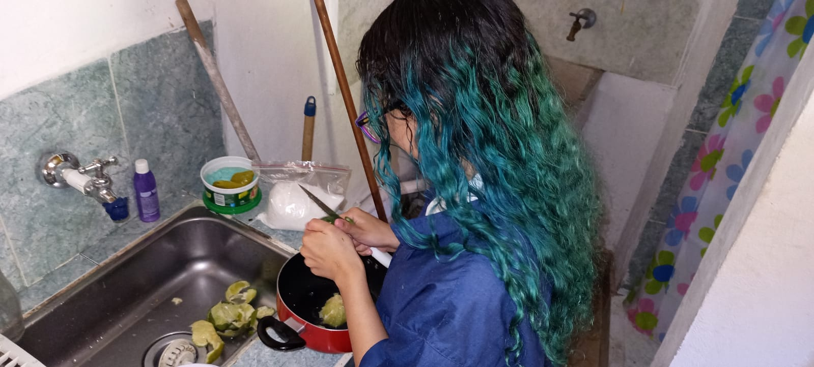

La mermelada de limón es una conserva dulce hecha con limones y azúcar. Tiene un sabor agridulce y refrescante, se utiliza como acompañamiento en tostadas, galletas y panes, así como en la elaboración de postres. La mermelada de limón es una opción deliciosa y saludable para disfrutar en cualquier momento del día.
Vamos a hacer nuestra mermelada de limón tres días antes para intentar quitarle un poco de amargor a los limones. Para ello, lava bien los limones, córtalos por la mitad y retira las semillas para depositarlas sobre una gasa limpia.
-Pelar los limones, eliminando la cascara, las semillas y las partes blancas internas y externas.
-En una olla echar los limones (totalmente limpios de partículas blancas) junto al azúcar y dejar cocinar a fuego bajo-medio.

-Ir revolviendo poco a poco durante la cocción.

-Al espesar, bajar del fuego y dejar reposar.

-Por último, envasar (en vidrio) y disfrutar.
Ácido cítrico: es un ácido orgánico tricarboxilico presente en muchas frutas cítricas, como el limón. Se utiliza como conservante, acidulante y saborizante en alimentos y bebidas.
también conocida como acido ascórbico, es una vitamina hidrosoluble esencial para el organismo. Actúa como antioxidante, fortalece el sistema inmunológico, ayuda en la absorción de hierro y es necesaria para la formación de colágeno.

son compuestos vegetales que se encuentran en muchas frutas, verduras y hierbas. Tienen propiedades antioxidantes y antiinflamatorias, y se ha demostrado que tienen beneficios para la salud cardiovascular y la prevención de enfermedades crónicas.
es un elemento de la tabla periódica cuyo símbolo es químico es K. El potasio es uno de los nutrientes más importantes para la producción de cítricos. Es necesario para la activación de enzimas, división de células, la fotosíntesis, transporte de fotosintatos y la osmorregulación.

SACAROSA es el nombre que se le da a la azúcar. La sacarosa es un disacárido por una molécula de glucosa y una de fructosa, que se obtiene principalmente de la caña de azúcar o de la remolacha azucarera..

•https://accionquimica.com/producto/acido-citrico-ttca/#:~:text=El%20%C3%A1cido%20c%C3%ADtrico%20es%20un,las%20conservas%20de%20vegetales%20enlatados.
•https://es.wikipedia.org/wiki/Wikipedia:Portada
•https://okdiario.com/recetas/mermelada-limon-1946244
•https://www.bbc.com/mundo
•https://www.mapa.gob.es/es/ministerio/servicios/informacion/azucar_tcm30-102346.pdf